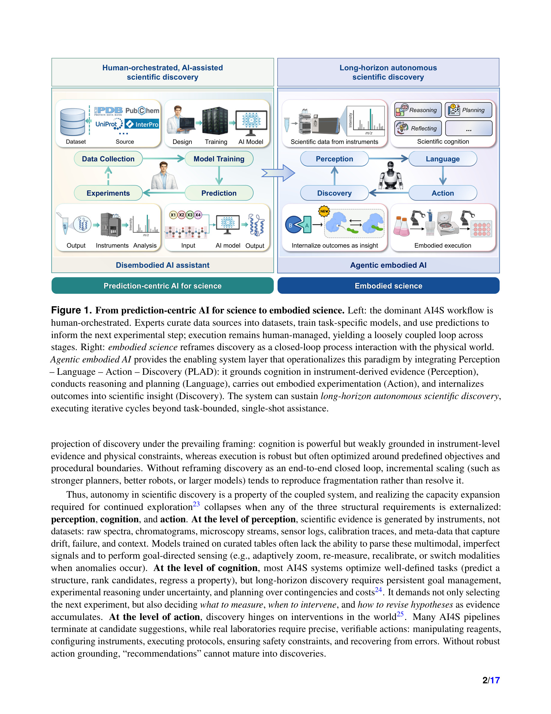
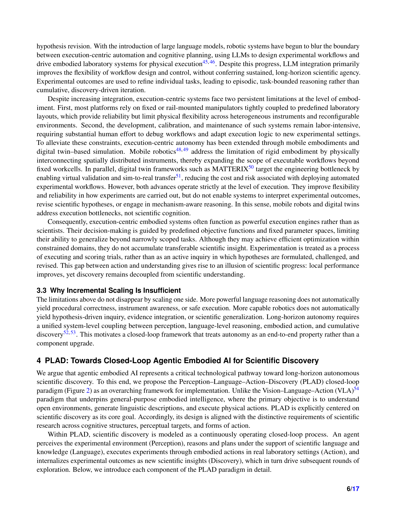
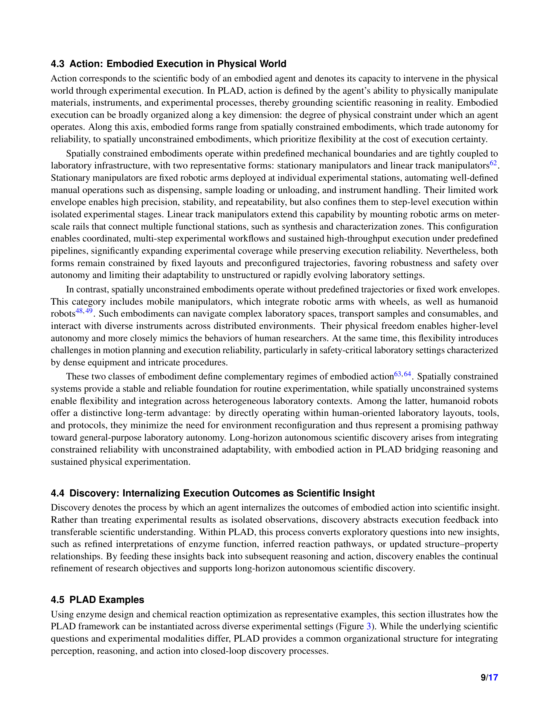
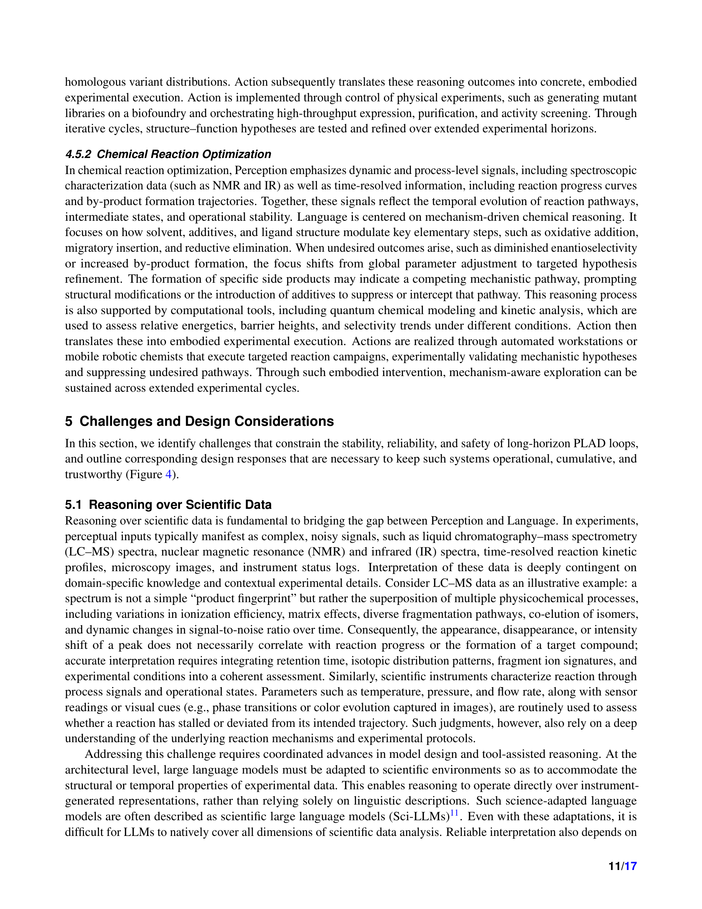

저자: Xiang Zhuang, Chenyi Zhou, Kehua Feng, Zhihui Zhu, Yunfan Gao, Yijie Zhong, Yichi Zhang, Junjie Huang, Keyan Ding, Lei Bai, Haofen Wang, Qiang Zhang, Huajun Chen | 날짜: 2026-03-20 | arXiv: 2603.19782 | 분야: cs.AI

Figure 1
과학적 발견을 "물리적 세계와의 지속적 상호작용을 통한 closed-loop 과정"으로 재정의하는 "Embodied Science" 패러다임을 제안하는 Perspective 논문이다. Perception-Language-Action-Discovery (PLAD) 프레임워크를 통해 agentic embodied AI가 실험 환경을 감지하고, 과학적 지식을 기반으로 추론하며, 물리적 개입을 실행하고, 결과를 내재화하여 장기적 자율 과학 발견(long-horizon autonomous scientific discovery)을 가능하게 하는 로드맵을 제시한다.

Figure 2

Figure 3

Figure 4
총평: AI4Science에서 cognition(추론)과 execution(실행)의 구조적 단절을 "Embodied Science"라는 통합 패러다임으로 진단하고 PLAD 프레임워크를 제안한 시의적절한 Perspective 논문이다. 현 landscape의 체계적 분류와 도전 과제 식별은 유용하나, 실험적 검증이 전무하고 기존 closed-loop 시스템(A-Lab, Coscientist 등)과의 차별점이 명확하지 않다는 한계가 있다. "과학적 발견은 embodied process"라는 핵심 주장은 올바르지만, 이를 실현하기 위한 기술적 경로가 아직 추상적 수준에 머물러 있어, 향후 구체적 구현과 실증이 이 비전의 가치를 결정할 것이다.